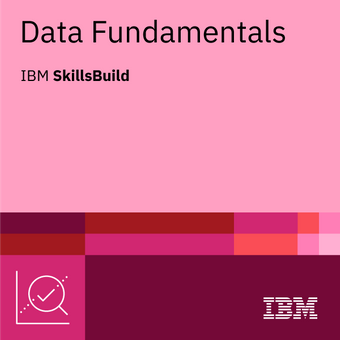
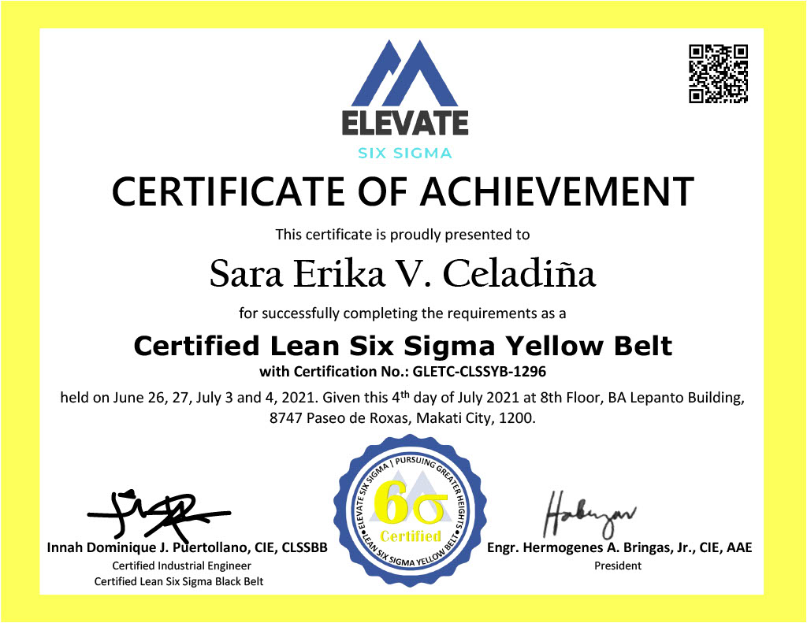
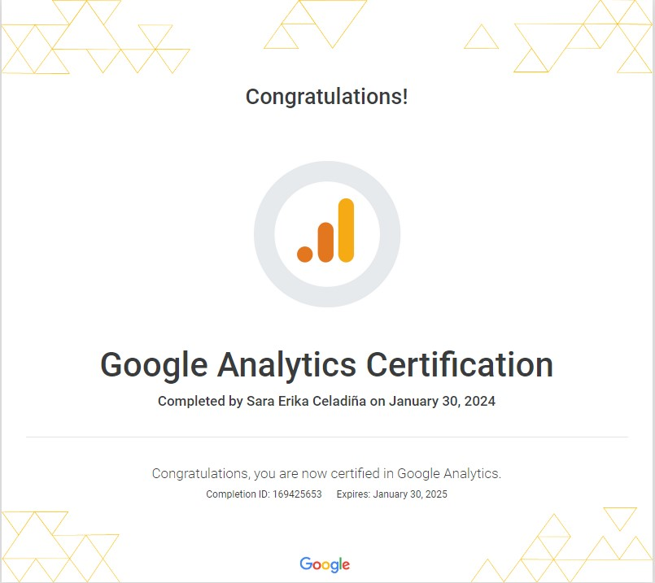

Certifications
As I continue my transition into Data Engineering, I've pursued certifications to strengthen my technical knowledge and validate my skills. These credentials reflect my learning in data pipelines, SQL, data fundamentals, and process improvement.
Databricks Certified Data Engineer Associate
Issued by: Databricks
Earned: October 2026
This certification validates foundational knowledge of data engineering using Databricks, including data ingestion, transformation, pipeline development, and data management.
Knowledge Areas: Databricks, SQL, PySpark, Delta Lake, ETL pipelines, Medallion Architecture, data quality, and workflow orchestration.
DataCamp SQL Associate
Issued by: DataCamp
Earned: November 2026
This certification demonstrates SQL skills for working with relational data, including querying, joining, aggregating, and preparing datasets for analysis.
Knowledge Areas: SQL, joins, filtering, aggregations, data cleaning, and data exploration.
Data Fundamentals
IBM SkillsBuild

Knowledge Areas: Data fundamentals, data cleaning, data analysis, databases, data visualization, data science methodology, and IBM Watson Studio.
Certified Lean Six Sigma Yellow Belt

Knowledge Areas: DMAIC, SIPOC, process mapping, root cause analysis, Fishbone Diagrams, Pareto Analysis, and 5 Whys.
Google Analytics

Knowledge Areas: Web analytics, reporting, traffic analysis, and data interpretation.
Continuous Learning
Beyond certifications, I continue to strengthen my skills through hands-on projects, SQL practice, and exploring data engineering tools and concepts.
My goal is to apply what I learn to real-world data challenges and continue growing as a Data Engineer.